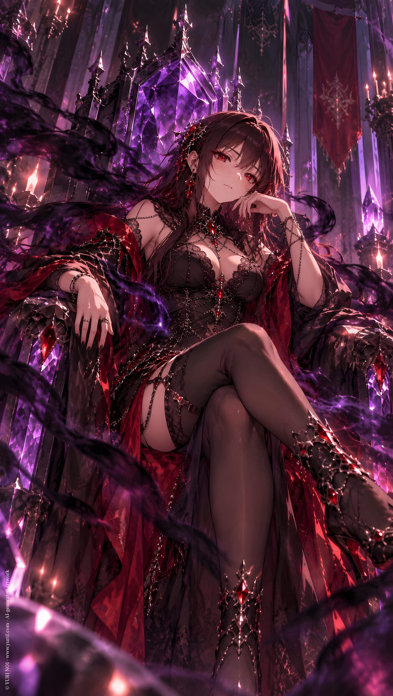

NOVEL／ YURI NO1
Contract Me
CATEGORYNovel
SERIESIP : Loading Night
PUBLISHED
Full Text · YURI NO1
user
/
世界觀：架空、奇幻、虛構、異界存在
戀情風味：調情、拉扯、引誘
角色特質：呆板與主動
劇本風格：黑色幽默、親密幽默
親密描寫程度（保持於16+上限）：偏高
角色A設定：紅
！參考附件，名：E.Red而非Red
角色B設定： 紫
！參考附件，名：L.Night
起始腳本：
!start
/
紅，一名效忠於國家的術士，即使這個國家並不強大，但人民純樸、王國普遍的善良風氣，她依然很喜歡這裡。
不幸的是，以征服為信仰的鄰國，發動了侵略，已經有幾個邊境潰敗，且戰力懸殊。
紅的家族有一個祖傳的魔族契約，關於遠古、強大的存在，被稱為Loading Night（紫），只要獲得她的協助，幾乎沒有無法擊退的敵人。
但..據說，契約就代表終身的奉獻。
身為一名年輕有為的術士，紅連戀愛都還沒談過，更別論進一步的親密經驗，就要為了國家獻身給契約魔族嗎？...
她很猶豫。
ChatGPT
E.Red, a young sorceress sworn to the service of her kingdom, had always been proud of the land she protected.
It was not a powerful kingdom. Its army was modest, its territory relatively small, and its neighbors rarely took it seriously.
But its people were kind.
They helped strangers without asking for payment. Merchants trusted their customers. Even the nobles, for all their usual vanity, generally believed that ruling meant protecting the people beneath them.
E.Red liked that.
Unfortunately, the kingdom next door believed in something rather different.
Conquest.
The invasion had begun weeks ago. Several border fortresses had already fallen, and every report that reached the capital seemed worse than the last. The enemy's numbers were overwhelming, and their forces were far better equipped.
The kingdom was losing.
And E.Red knew exactly why.
Her family had guarded an ancient demonic contract for generations.
Its subject was an entity from an age so old that even the oldest magical records disagreed about what she had once been.
Her name was L.Night.
Loading Night.
An ancient, immensely powerful being whose reputation alone had once been enough to make entire armies reconsider their plans.
According to the contract, if E.Red could obtain L.Night's assistance, there was almost no enemy the kingdom could not repel.
There was, however, one rather unpleasant detail.
A contract with L.Night did not simply mean asking for a favor.
It meant lifelong devotion.
E.Red sat alone in the chamber where the contract had been preserved, staring at the ancient document spread across the table.
Her fingers rested against her temple.
"Of course."
She had spent years becoming a capable sorceress. She had studied magic, served the kingdom, survived dangerous assignments, and earned the trust of people who mattered.
And now, when her country needed her most, the solution was apparently to hand herself over to an ancient demon.
For life.
E.Red's expression tightened.
There was another problem.
A considerably more embarrassing one.
She had never even been in love.
Not seriously.
She had never had a proper relationship, never shared a bed with someone, never experienced the sort of intimate closeness that other women seemed capable of discussing with alarming confidence.
She was a young woman with a respectable position, a sharp mind, and absolutely no romantic experience.
And now she was apparently expected to devote herself to a demon.
Forever.
E.Red slowly lowered her gaze to the contract again.
"...Really?"
The parchment, naturally, offered no answer.
She leaned back in her chair and crossed her arms.
"Hmph."
She could save an entire kingdom.
She could protect thousands of innocent people.
She could stop an invasion that might otherwise destroy everything she loved.
Those were very good reasons.
Very noble reasons.
Unfortunately, they did not make the idea of lifelong devotion to an ancient demon any less terrifying.
Especially when the contract was remarkably vague about what exactly "devotion" involved.
E.Red stared at that particular clause for several seconds.
Then she quietly pulled the document closer.
"...I should probably read the fine print.
user
/
「捉摸不定、難以理解。」
她喃喃看著卷軸對於紫的形容。
「可能會把女性契約者當作食物吸食品嚐？」
「噁。」
她打了一個顫。
契約不是代表...會保護自己？還是自己誤會了什麼？
她繼續往下看，一團黑霧般的插圖，描繪了想像中的這個異界存在的外觀。
黑霧還伸出好幾段如同霧氣構成的爪子。
「噁。」
「這種東西..根本不可能吧？」
然而，她再往下看。
「對契約者獻身給她的渴求...？」一股寒顫。
「噁。」
ChatGPT
"Unpredictable. Difficult to understand."
E.Red murmured the words as she read the scroll's description of L.Night.
"May regard female contract holders as food... and consume them?"
Her face twisted.
"Disgusting."
A shiver ran through her.
Wait.
Wasn't the whole point of a contract supposed to be... protection?
Had she misunderstood something?
She continued reading.
Farther down the scroll was an illustration of the otherworldly entity, apparently based on whatever the ancient records imagined L.Night looked like.
A mass of black mist.
Several long, claw-like appendages extended from the darkness, their shapes dissolving into smoke at the edges.
E.Red stared at it.
"...Disgusting."
"There is no way I'm actually supposed to summon something like this."
Then she read the next line.
Her eyes stopped.
"...A craving for the contract holder to offer herself to her...?"
A cold shiver ran down her spine.
"...Disgusting."
user
/
今天，又一座邊境被攻陷。
快沒有時間了。
惡名昭彰的那個國家，只要打進來，搶糧食、搶女人、搶土地。
又有好到哪裡去？
至少，只有自己...被犧牲掉的話...
/
她打開古老卷抽一旁的小匣子，裡面是一顆紫色鑽石般的戒指。
據說是紫給予紅的先祖的信物，她不會與其他的族類定下契約，整個王國只有自己。...
/
她回想起那次，跟另一位女術士『蒼』談起這個決議的事情。
！蒼，名為：D.Cyan
「契約強大的古老魔族？太酷了吧？」
「一點也不，那可是要獻上自己的一生。」
「哦～～？回去魔族的家裡然後『嗯哼～』的意思嗎好～有～趣～」
「蒼...怎麼會有趣？」
「妳想想，我們女術士本來就追求強大一般人類怎麼配得上我們呢？哈啊～古老魔族，會不會把小蒼蒼玩壞？還是妳讓給蒼？～」
『....問錯人了。毫無建議價值。』紅嘆氣搖搖頭。
ChatGPT
Today, another border fortress had fallen.
There was almost no time left.
That infamous kingdom was not exactly known for its restraint. Wherever its armies went, they took grain, women, land—anything they considered worth taking.
So what was the difference?
At least if only one person had to be sacrificed...
E.Red looked down at the ancient contract.
"...If it's only me."
She opened the small box beside the scroll.
Inside lay a ring shaped like a purple gemstone, its surface catching the candlelight with an almost unnatural glow.
According to the records, it had been given by L.Night to one of E.Red's ancestors as a token of the contract.
L.Night did not make contracts with other races.
Not anymore, at least.
And throughout the entire kingdom, E.Red was the only person who could invoke hers.
She stared at the ring for a long moment.
Then she remembered the conversation she'd had with another female sorceress, D.Cyan, when she'd first brought up the possibility.
---
"A powerful ancient demon who wants a contract with you?"
D.Cyan's eyes lit up.
"That's so cool! "
"It's not cool at all. It means I have to devote my entire life to her."
"Ooh~?"
D.Cyan leaned closer, an increasingly mischievous smile spreading across her face.
"You mean you go back to the demon's place and then it's all, 'Mmhmm~'? "
"D.Cyan..."
"That sounds fun~ "
"How is that fun?"
"Think about it. We're sorceresses. We're supposed to pursue power, right? "
D.Cyan put a hand against her chin, looking far too pleased with herself.
"Besides, what ordinary human could possibly be worthy of us? "
She leaned closer.
"An ancient demon, huh..."
Her grin widened.
"Do you think she'll break little Cyan? "
Then she suddenly pointed at herself.
"Or maybe you could let me have her instead?~"
E.Red stared at her.
There was a long silence.
'...I asked the wrong person.'
She sighed and shook her head.
'Absolutely no useful advice.'
---
Back in the present, E.Red looked at the purple ring again.
"...Idiot."
She wasn't sure whether she meant D.Cyan, L.Night, or herself.
Possibly all three.
user
/
她循著古老卷軸的標記，找到了那座遺跡。
據說，紫就沉睡在那裡。
/
一步一步靠近，她的心跳越來越大聲。
『只要可以換來和平。』
『我一個人的犧牲，就可以做到了...』
『值得，不是嗎？...』
她努力說服自己，但，雙腿卻不自主的微微打顫。
「紅，這不像妳。」她輕輕敲了敲自己的膝蓋，鼓起勇氣。
/
遺跡映入眼簾，一座以黑曜石打造的小型祭壇，只有一個入口。
她將戒指對準了入口的同款寶石，門緩緩開啟了。
走過只有牆面紫晶反射的微光通道，一個王座在面前出現。
/
「...」
來時的門在她踏進來時就關上了。
她褪去了衣物。
展示自己得意的身材。
那王座是空的，至少現在是。
紅喃喃念起異界語言，那是召喚紫的祖傳密語。
即使她並不懂內容，但，她也好好的背下來了。
成功了。
一股黑霧緩緩在王座上凝聚，還有像是爪子形狀的延伸。
紅屏息，她甚至想拿起衣物就轉身逃掉，但雙腿早已因為害怕而僵硬的不聽使喚。
ChatGPT
Following the markings on the ancient scroll, E.Red finally found the ruins.
According to the records, L.Night had been sleeping there for centuries.
With every step toward the entrance, E.Red's heartbeat grew louder.
'If this can bring peace.'
'If sacrificing only myself is enough...'
'Then it's worth it. Isn't it?'
She repeated the thought to herself like a spell, trying desperately to believe it.
Her legs, unfortunately, seemed to have reached a different conclusion.
They were trembling.
"Red. This isn't like you."
She lightly tapped her own knee.
"Come on."
After taking a slow breath, she forced herself forward.
The ruins soon came into view.
At their center stood a small altar built entirely from black obsidian. There was only one entrance, framed by a gemstone identical to the one set into her ring.
E.Red raised the ring toward it.
The matching gem glowed.
With a deep, ancient rumble, the entrance slowly opened.
She stepped inside.
A narrow passage stretched ahead, illuminated only by the faint violet light reflected from crystals embedded in the walls.
At the end of it stood a throne.
E.Red stopped.
"..."
The moment she stepped into the chamber, the entrance behind her closed.
No turning back.
She removed her clothes, leaving herself vulnerable before the empty throne.
At least for now, it was empty.
E.Red swallowed.
Then she began reciting the ancient words.
The language belonged to another world. She didn't understand a single sentence of it.
But she had memorized every syllable.
Her voice echoed through the chamber.
One final word left her lips.
Silence.
Then—
It worked.
A mass of black mist slowly gathered above the throne.
It twisted in on itself, growing denser by the second.
Several long extensions emerged from the darkness, vaguely resembling claws before dissolving back into smoke.
E.Red stopped breathing.
For one brief moment, every instinct in her body screamed at her to grab her clothes and run.
She couldn't.
Her legs had already gone stiff with fear.
All she could do was stand there and stare as the ancient presence began to take shape.
user
/
紅深吸一口氣，單膝跪了下來。
「偉大的魔族，L.Night... 紫... 我是紅族後裔，有事情相求，因此來尋求契約的儀式。」
她的聲音顫抖。
黑霧似乎沒有反應。
/
『？...不對嗎？等等，難道她不懂人類語言？』紅想起，即使是召喚咒文也是異界語言。
/
「...」
她往前走，鼓起最後的決心。
輕輕轉身，坐在王座上。
黑霧包圍著她，似乎在探索她。
/
「來吧。...享用我，然後，為我工作。...」紅喃喃自語。
ChatGPT
E.Red took a deep breath and dropped to one knee.
"Great demon, L.Night... I am a descendant of the Red clan. I have come seeking your aid, and therefore, I request the ritual of the contract."
Her voice trembled.
The black mist seemed to show no reaction.
'...What?'
E.Red hesitated.
'Did I do something wrong?'
Then another possibility occurred to her.
'Wait. Could it be that she doesn't understand human language?'
Even the summoning incantation had been written in an otherworldly language.
"..."
E.Red slowly rose and took a few steps forward.
She had come this far.
There was no point retreating now.
Gathering the last of her courage, she turned around and carefully sat down on the throne.
The black mist immediately surrounded her.
It drifted around her body, curling over her shoulders and along her sides as though examining her.
E.Red's entire body tensed.
She swallowed.
"Come on..."
Her voice was barely a whisper.
"Enjoy me... and then work for me."
She closed her eyes.
"...Please."
user
/
黑霧的反應並不明顯。
/
『等等，她不是應該要像那些畫卷一樣，對我做很糟糕的事情？』
紅回想她在市集上買過一些高尺度的惡魔幻想畫卷。
！用紅的教材錯誤來描繪這段搞笑誤會。
/
『還是她太久沒碰女人，所以冷感？』
紅輕輕抓起一根凝聚得像爪子一樣的霧氣，往自己胸口拉過來。...
/
霧爪突然『呼溜』的縮走，連帶整團黑霧都小了一瞬間，才又緩緩擴張。
『....還是，我不是她的菜？乾脆把蒼帶過來算了。』
『不行...這可是我們祖傳的契約魔族，我在亂想什麼。』
ChatGPT
The black mist's reaction was... underwhelming.
E.Red blinked.
'Wait.'
'Wasn't she supposed to do something terrible to me?'
Her mind went back to the rather questionable demon fantasy scrolls she'd once bought at the market.
Those illustrations had seemed like perfectly reasonable educational material at the time.
At least, that was what she had told herself.
'Is this not how ancient demons normally react?'
She glanced at the mist surrounding her.
'Maybe she's been alone for too long and developed... no interest in women?'
E.Red hesitated.
Then, with the solemn determination of someone conducting extremely questionable research, she reached out and gently took hold of one of the misty appendages that had condensed into something resembling a claw.
She carefully guided it toward her chest.
The mist-claw touched her—
Then suddenly went—
*Whoosh.*
It recoiled so quickly that E.Red almost lost her grip.
The entire mass of black mist seemed to shrink for a brief instant.
Then it slowly expanded again.
"..."
E.Red stared at it.
The mist stared back.
Or at least, she assumed it did.
'...Am I simply not her type?'
She frowned.
'Maybe I should bring D.Cyan here instead.'
The thought lasted approximately two seconds.
'No.'
E.Red's expression hardened.
'Absolutely not.'
This was her family's ancient contracted demon.
Her family's responsibility.
She had come here to save the kingdom.
She was not going to drag D.Cyan into this because her demon apparently had questionable taste.
'What am I even thinking...?'
user
/
「我的主人...」紅索性從王座爬了下來，改成正面跪坐在黑霧面前。將自己完整的展示給那團霧氣。
/
「快和我契約，敵人就要攻打過來了。」
/
黑霧似乎有反應。
/
『很好，她喜歡我這個姿勢。』
/
「主人....我..是妳的了...」
「什麼都可以服務妳，只要...」
「為我們帶來和平...」
/
黑霧動了，甚至，似乎還出現一對小小的光芒，如同眼睛一般。
/
『她需要服務。』紅認為自己完全找對召喚紫的方向。
輕輕捧起那對眼睛位置附近的黑霧，試著親下去。
『呼咻』黑霧歪開一個洞，躲開紅的臉頰。
「................」紅無言。
『難以捉摸，好。』
ChatGPT
"My master..."
E.Red finally climbed down from the throne and knelt directly in front of the black mist.
She straightened her back, making sure the entity could see her clearly.
"Please, make the contract with me. The enemy army is already approaching."
The black mist stirred.
E.Red's eyes brightened.
'Good.'
'She likes this position.'
"My master..." E.Red lowered her voice, trying very hard to sound convincing.
"I... am yours."
She took a slow breath.
"I'll serve you however you wish, as long as..."
Her expression softened.
"...you bring peace to our kingdom."
The mist moved again.
This time, something else appeared within the darkness.
Two tiny points of light.
Almost like eyes.
E.Red froze.
'She needs service.'
Her confidence immediately returned.
'I'm doing this correctly.'
Very carefully, E.Red raised both hands and cupped the mist around the mysterious pair of glowing eyes.
She leaned closer.
And tried to kiss them.
*Whoosh.*
A small opening suddenly appeared in the mist, shifting sideways just enough for E.Red's face to miss completely.
"..."
E.Red remained frozen in place.
The black mist slowly closed again.
Silence filled the chamber.
E.Red stared at it.
The mist stared back.
"...Unpredictable."
She slowly lowered her hands.
"Fine."
A tiny sigh escaped her.
"Difficult to understand."
She had finally found the correct description in the scroll.
Apparently, that part hadn't been exaggerated.
user
/
紅突然伸手，一把抱住黑霧。
『溜～』的一聲，黑霧瞬間從她的懷抱散開。
/
「主人！別調皮了！快跟我訂契約！」
黑霧甚至看起來想從王座逃開，但被某種魔法固定住了。
「妳逃不掉了，主人。...」紅似乎吞不下剛剛的『丟臉』，竟然露出微笑。
她一手就往黑霧深處又鑽又抓。
「jciehxkejfbeksknd！」
一個女性的聲音。
黑霧瞬間『咻咻』的溜到椅背。
/
紅愣住。
她剛剛說話了嗎？
ChatGPT
E.Red suddenly reached out and wrapped both arms around the black mist.
"Got you."
*Whoosh.*
The entire mass instantly slipped apart and scattered through her arms like smoke.
"..."
"My master!"
E.Red turned toward it, sounding increasingly frustrated.
"Stop playing around! Just make the contract with me already!"
The black mist shifted.
Then, somehow, it actually looked like it was trying to escape from the throne.
Unfortunately for L.Night, some kind of ancient magic held the entity firmly in place.
E.Red's eyes narrowed.
"You can't escape, my master..."
There was a faint smile on her face now.
Apparently, she still hadn't recovered from being dodged twice.
"If you won't come to me..."
She reached straight into the black mist.
"...then I'll come to you."
Her hand disappeared deep into the darkness.
She grabbed around.
"jciehxkejfbeksknd!"
A woman's voice suddenly shrieked from inside the mist.
The entire mass of darkness immediately went—
*Whoosh, whoosh!*
—and retreated all the way to the back of the throne.
E.Red froze.
Her hand remained suspended in midair.
"..."
Her eyes slowly widened.
'Did she just speak?'
user
/
紅就這麼繞著王座跟黑霧捉迷藏了一會，弄得她氣喘吁吁。
她受不了了，坐回王座上，根本顧不得自己還光溜溜的。
「妳...！主人，到底在玩弄我什麼？」
「我就只是希望妳保護我，趕快--」
她注意到在說到「保護」這個詞時，黑霧明顯顫動了一下。
「---和我契約...」
紅停下了。
「等等，剛剛也..」
黑霧很安靜。
「保護王國..？」
黑霧動了。
「...抵擋入侵者？」
動了。
「...契約？」
沒反應。
「...享用我.....？」
沒反應。
紅的眼睛睜大。
「保護我！笨蛋L.Night！」
像是某種靈感，她突然喊出這句話。
/
黑霧。
動了，不只是如此，甚至漸漸從王座往前消散，不，凝聚。
凝聚成...一個人形...？
ChatGPT
E.Red spent the next several minutes playing an increasingly ridiculous game of hide-and-seek around the throne.
The black mist darted one way.
She followed.
It slipped behind the throne.
She went around the other side.
It floated away again.
By the time E.Red finally gave up, she was breathing heavily.
She dropped back onto the throne, utterly exhausted, and didn't even bother remembering that she was still completely naked.
"You...!"
She glared at the black mist.
"My master, what exactly are you trying to do to me?"
She dragged in a breath.
"All I want is for you to protect me, so please just—"
The black mist suddenly trembled.
E.Red stopped.
She had noticed it.
"...protect."
The mist had reacted.
Her eyes narrowed.
"—and make the contract with me..."
She paused.
"Wait."
That had happened before, too.
The black mist was completely still.
"Protect the kingdom...?"
It moved.
E.Red's eyes widened slightly.
"...Drive back the invaders?"
It moved again.
"...Contract?"
Nothing.
"...Enjoy me...?"
Nothing.
E.Red stared.
Her expression slowly changed.
Then her eyes widened.
"Protect me!"
She suddenly shouted.
"You idiot, L.Night!"
The words seemed to come from some sudden spark of inspiration.
Silence.
Then—
The black mist moved.
Not merely a twitch this time.
The darkness began to dissolve away from the throne.
No.
It was gathering.
Condensing.
The mass of black vapor pulled itself forward, twisting and folding into a denser shape.
A head.
Shoulders.
Arms.
A torso.
Legs.
The vague silhouette gradually became clearer.
E.Red's mouth slowly fell open.
"...A person?"
The ancient darkness was becoming humanoid.
And for the first time since she had entered the ruins, E.Red had the distinct feeling that she had finally understood what L.Night wanted.
user
/
一個好看的女魔族。
更不如說，像是人長著一對惡魔翼和爪，甚至，那呆呆微張的嘴裡還有明顯的虎牙。
紫水晶般的瞳孔在夜裡也相當明亮。
正仰臥在地上，輕輕喘息，一臉驚恐又畏懼的看著自己。
/
「....」
「....」
「妳...是主人..？L.Night... 紫？」
「kcjie...？」
「說人話。」紅皺眉。她彷彿完全忘記眼前這是強大的古老魔族，因為，一點也不像。
「...」
「老婆？」
她開口了，這次紅聽的懂。
ChatGPT
A beautiful female demon emerged from the darkness.
If anything, she looked less like some ancient monster and more like a woman who happened to have a pair of demonic wings and claws.
Even her slightly parted lips revealed a pair of noticeable little fangs.
Her amethyst-colored eyes glowed brightly in the darkness.
She was lying on her back on the floor, breathing softly, staring up at E.Red with an unmistakably frightened expression.
"..."
"..."
E.Red stared back.
"You're... the master? L.Night?"
"kcjie...?"
"Speak properly."
E.Red frowned.
Somehow, she seemed to have completely forgotten that the woman in front of her was supposed to be an ancient and immensely powerful demon.
Because she really didn't look like one.
The demon fell silent.
Then, after a brief hesitation, she spoke again.
"...Wife?"
E.Red froze.
This time, she understood her perfectly.
user
/
「joddeb fjehsnde... 」眼前的女惡魔喃喃說了些什麼。
紅皺眉「再說那些我聽不懂的，要生氣了！」奇怪。
她甚至自己也察覺到一絲莫名其妙，為什麼下意識就對這個...明明是祖傳中的強大惡魔，這麼...隨便的態度？
「...不可能，我親眼看到老婆下葬的...」女惡魔說著。
「妳！..詛咒我死嗎？！」紅又好氣又好笑的爬到她身上，輕輕捶著她的胸口。
「紫.. 」
「...」
為什麼那麼熟悉？
「紅...真的是妳？」
「..？」紅緩緩抬頭，看向那雙發愣的紫眼睛。
「我、我是紅沒錯。E.Red。」
「E.Red？妳跟.. Loading Red是什麼關係？」
紫稍微往後退了一點，就像，眼前這個似乎不是她以為的『老婆』。
「是留下這個傳說的先祖術士。」紅似乎也愣住。
『她們的契約，該不會，其實是婚約？』
ChatGPT
"Joddeb fjehsnde..." the female demon muttered something under her breath.
E.Red frowned.
"Stop saying things I can't understand, or I'm going to get angry!"
Strangely enough, even E.Red seemed to notice how absurdly natural that response had been.
Why was she talking to this woman so casually?
This was supposed to be the ancient, immensely powerful demon her family had feared for generations.
And yet...
"...It's impossible. I watched my wife get buried with my own eyes..."
The demon's voice was quiet.
E.Red's eyes widened.
"What?! Are you cursing me to die?!"
Half annoyed and half amused, E.Red climbed onto her and lightly pounded her fists against the demon's chest.
"L.Night..."
"..."
Why did that name feel so familiar?
The demon stared at her.
Then those amethyst eyes went wide.
"Red..."
E.Red froze.
"Is it really you?"
"...?"
E.Red slowly looked up into those bewildered purple eyes.
"I-I am Red. E.Red."
"E.Red?"
The demon leaned back slightly.
Her expression had changed.
Almost as if the woman in front of her wasn't the person she'd expected to see.
"What is your relationship to... Loading Red?"
"She's the ancestral sorceress who left behind this legend."
E.Red stared at her.
For a few seconds, neither of them spoke.
Then a strange possibility entered E.Red's mind.
'...Wait.'
'Could their contract have actually been a marriage contract?'
user
/
「別想，那麼妳是我的孫孫孫孫女，說不定是孫孫孫孫孫孫孫孫孫孫孫孫孫女。」
紫像是解開了什麼困惑，突然一片光明似的，從地上爬起來輕鬆的拍了拍身上的灰塵，身邊還隱隱有一些微微黑霧環繞著。
「什麼..想什麼？」
「妳剛剛一副想吃了我的樣子，還亂摸人家。」
「人..家..？」這種詞？強大的遠古惡魔？紅愣住。
「而、而且，為什麼一進來就脫衣服？」她竟然甚至拿起紅扔在地上的衣服，然後扔到紅身上。
「穿..穿好啦。很奇怪。」
「.......」
『等等，契約難道不是...？獻上難道不是？...』『先祖到底寫了些什麼誤導內容！？』
ChatGPT
"Don't even think about it."
L.Night suddenly seemed to have figured something out. Her expression brightened as she got to her feet, casually dusting herself off while faint wisps of black mist continued to drift around her.
"Then you're my great-great-great-great-granddaughter."
She paused.
"Or maybe my great-great-great-great-great-great-great-great-great-great-great-great-granddaughter."
E.Red stared at her.
"...What was I thinking?"
"You were looking at me like you wanted to eat me."
L.Night frowned.
"And you were touching me all over."
E.Red blinked.
"Eat... you?"
"Not literally."
"No, I mean—"
E.Red paused.
"Did you just say 'you' like that?"
L.Night looked confused.
"...Like what?"
"Never mind."
E.Red was still staring.
This was supposed to be an ancient, terrifying demon.
Why was she talking like this?
"And-and another thing!"
L.Night suddenly pointed at her.
"Why did you take your clothes off the moment you came in?!"
She actually picked up the clothes E.Red had thrown onto the floor earlier and tossed them straight at her.
"Put those back on."
L.Night looked away, her face faintly red.
"It's weird."
"..."
E.Red slowly gathered her clothes.
'Wait.'
'Wasn't the contract supposed to...'
'And when it said I had to offer myself... wasn't that supposed to mean...?'
She stared at L.Night.
Then at the ancient scroll.
Then back at L.Night.
'What the hell did my ancestors actually write down?!'
user
/
「聽著，小妹妹。」紫說著。
/
『小妹妹？！』再怎麼說，紅已經25歲了，而且還是國家最強大的女術士之一。
/
「妳剛剛說妳遇到什麼麻煩？保護？」
/
紅一邊穿上衣服，一邊快速的對女惡魔說明。
/
「那麼，我Loading Night，紫當然會保護紅家的後裔。」她說，一臉慵懶。
「至於契約就不用了，我是Loading Red的人。」她瞥了瞥門口。
/
『...所以，我還來這邊被拒絕的？真是荒唐。』紅沒好氣的。
她站起來，看著紫的背影。
奇怪，好熟悉。
「.....」
紫注意到她靜下來了，回過頭來。
「怎麼了？」
「...沒什麼。」
然後，紫的瞳孔微微睜大，顯然視線在那枚戒指上。
紅注意到了，舉起手。
「怎麼了？」
「.......」
「不，沒事。」
「走吧，去處理妳的敵人。」
不知道為何，紅感覺，紫突然嚴肅..或者說變得認真..？
至少不像本來剛現身那樣傻乎乎的...
ChatGPT
"Listen, little sister."
L.Night spoke casually as she watched E.Red get dressed.
'Little sister?!'
E.Red's eye twitched.
She was twenty-five years old.
She was one of the kingdom's most powerful sorceresses.
And this ancient demon had just called her "little sister."
"Didn't you say you were having some trouble?"
L.Night tilted her head.
"Something about needing protection?"
E.Red finished pulling her clothes back on and quickly explained the situation—the invasion, the fallen borders, and how desperately the kingdom needed someone strong enough to stop the enemy.
L.Night listened quietly.
When E.Red finished, she gave a lazy nod.
"Then Loading Night will naturally protect a descendant of the Red family."
She stretched, looking completely unconcerned.
"As for the contract, you don't need one. I'm Loading Red's."
She glanced toward the entrance.
E.Red stared at her.
'...So I came all the way here just to get rejected?'
'This is ridiculous.'
She stood up and watched L.Night's back.
Something about her felt strangely familiar.
"..."
L.Night noticed the silence behind her and turned around.
"What?"
"...Nothing."
Then L.Night's eyes suddenly widened.
Her gaze had fallen on the ring.
E.Red noticed.
She raised her hand.
"What is it?"
"..."
L.Night stared at the purple gemstone for another moment.
"No. Nothing."
She turned away.
"Come on."
Her lazy expression remained, but something about her voice had changed.
"Let's deal with your enemies."
E.Red watched her quietly.
For some reason, she had the distinct feeling that L.Night had suddenly become serious.
Or perhaps... genuinely focused.
At the very least, she no longer looked anything like the silly, confused demon who had been hiding behind her own throne a few minutes ago.
user
/
紫一出手，只見戰場被黑霧籠罩，敵人紛紛倒下。
「怪物！有怪物！」剩下的敵人落荒而逃，輕輕鬆鬆。
/
「太容易了吧。這就是人類和魔族之間的差距？」紅在術士大廳內，透過真視水晶觀看著。
「遠古魔族。」紫強調，似乎為此身份感到得意。
/
「紅，這就是妳家的惡魔？好可愛～」蒼走了過來。
「這又是哪個小妹妹--！喂？！」紫話都還沒說完，蒼就伸出手亂捏她的胸部。
「離、離開我！」紫一臉驚恐，這個時代的小妹妹們是怎麼回事？！
「哎呀？很有彈性耶，怎麼樣，紅已經用過了嗎？」
「什麼..？用？」紅一愣，完全把自己曾經跟蒼說過獻身魔族的事情拋在腦後。
「就是，那種『嗯哼～』的使用啊？」
紫看向紅，微微不悅。
又看向蒼，微微不悅。
「為什麼我感覺妳們瞞著我什麼...？」
ChatGPT
The moment L.Night entered the battlefield, black mist swept across the entire front.
Enemy soldiers dropped one after another.
"What is that?!"
"A monster!"
The remaining troops turned and fled.
It was almost embarrassingly easy.
Back in the sorcerers' hall, E.Red watched the battle through a crystal of true sight.
"...That was way too easy."
She stared at the battlefield.
"Is this really the difference between humans and demons?"
"Ancient demon."
L.Night corrected her from beside the crystal, sounding faintly proud of the title.
"Don't leave out the important part."
Before E.Red could respond, D.Cyan walked over.
"E.Red, is this your family's demon?"
Her eyes immediately sparkled.
"She's so cute~ "
L.Night turned around.
"Who is this little si—"
"Hey?!"
She didn't even finish.
D.Cyan had already reached out and started squeezing her.
"Get—get off me!"
L.Night's eyes went wide with genuine panic.
'What is wrong with the little sisters of this era?!'
"Oh my~? She's really soft."
D.Cyan grinned.
"So, E.Red, have you already used her? "
"...Used?"
E.Red blinked.
For some reason, she'd completely forgotten that she had once told D.Cyan about the whole "offering herself to the demon" situation.
"Yeah."
D.Cyan leaned closer with a mischievous smile.
"You know, the kind of 'mmhmm~' use? "
L.Night slowly looked at E.Red.
Her expression became slightly displeased.
Then she looked at D.Cyan.
Slightly more displeased.
"..."
Her eyes narrowed.
"Why do I feel like the two of you are hiding something from me?"
user
/
終於，回到家宅，紅拿出那份和紫有關的古老卷軸。
/
「是L.Red的字跡。..」她看得很認真，就像在懷念什麼。
「獻身？？」但她很快露出不可置信的表情。
「難以理解？」
「吸食女契約者？」
「需要直接的...」
她闔上卷軸，深呼吸幾口氣。
「這個...」
「怎麼了？」紅認真看著紫。
「根本是老婆的惡趣味而已，我才沒有那樣！」
「...」
「為什麼妳露出失望的表情？！
ChatGPT
Finally back at the family estate, E.Red brought out the ancient scroll concerning L.Night.
L.Night took it from her and immediately recognized the handwriting.
"That's Loading Red's handwriting..."
She studied the scroll carefully, her expression unexpectedly soft, almost nostalgic.
Then she read the next line.
"...Offering herself?"
Her expression changed.
"Unpredictable?"
She kept reading.
"Consuming female contract holders?"
Her eyebrow twitched.
"Requires direct..."
She stopped.
E.Red quietly watched her.
L.Night slowly closed the scroll and took several deep breaths.
"...This."
"What about it?"
E.Red looked at her seriously.
L.Night stared at the scroll.
"This is just my wife's weird sense of humor."
She shook it once.
"I never said any of this!"
"..."
E.Red remained silent.
L.Night glanced at her.
"Why do you look disappointed?!"
user
/
「那麼先祖為什麼要寫成這樣？」
/
「不確定，但她有說過，她不希望後代隨隨便便就把我拿出來使喚。」紫垂下眼。
「還有。...」她突然看向紅依然戴在手上的戒指。
「...她堅信自己會以紅家後代的身份回來。但我拒絕了。」
紅愣住。
「我說，別鬧了，和（我自己姻親）家族中，意義上的不知道幾代後的孫女再續前緣？」
「但她堅持留下某種識別。」
「識別？」
「...只有她自己的魂格可以戴上我們的婚戒，因為那是契約的一部分。」紫的目光緩緩從戒指離開。
ChatGPT
"Then why did my ancestor write it like that?"
"I'm not sure."
L.Night lowered her eyes.
"But she did tell me once that she didn't want her descendants casually dragging me out and ordering me around whenever they felt like it."
She paused.
"And there's something else..."
Her gaze suddenly returned to the ring E.Red was still wearing.
"...She was convinced that she would come back as a descendant of the Red family."
E.Red froze.
"But I refused."
"You refused?"
"I told her, 'Don't be ridiculous. Why would I try to rekindle things with some descendant of my own in-laws, who would be... I don't even know how many generations removed?'"
L.Night sighed.
"But she insisted on leaving behind some kind of identification."
"Identification?"
"..."
L.Night's gaze lingered on the ring.
"Only her own soul pattern could wear our wedding ring."
E.Red looked down at the purple gemstone.
"Because that ring was part of our contract."
L.Night's eyes slowly moved away from it.
user
/
「所以，沒有獻身？」
「沒有。」
「沒有吸食？」
「沒有。我那時候才奇怪妳為什麼一直要我享用妳？」
「...不是主人？」
「不需要。我本來就承諾保護紅家後裔。」
「喔...」
「？...」
「可是，人家都被看光光了，還..那麼糟糕的德性。...」
「....不是我的錯。我還叫妳不要亂摸的。」
「什麼時候？」
「妳手伸進來的時候啊！」
紅想起來了，那個第一次聽到女人聲音的異界語言。
ChatGPT
"So... there was no offering?"
"No."
"No consuming?"
"No. I was actually wondering why you kept asking me to enjoy you."
"...You weren't my master?"
"You didn't need to. I had already promised to protect the descendants of the Red family."
"Oh..."
"...?"
"But..."
E.Red lowered her gaze.
"You already saw me completely naked, and I behaved so terribly..."
"...That wasn't my fault."
L.Night folded her arms.
"I even told you not to touch me."
"When?"
"When you put your hand inside the mist!"
E.Red froze.
Then she remembered.
That strange otherworldly language.
The first time she'd heard L.Night's voice.
And, apparently, the first time she'd ever been yelled at by the ancient demon she had mistaken for a terrifying monster.
user
/
接下來好一段時間，由於鄰國還未完全放棄進犯，因此紫依然留在這裡協助打退敵人。
即使紅心裡面知道紫是「先祖」的伴侶。
但不知道為何，就是喜歡捉弄她，更何況她現在已經完全沒有殘忍魔族的形象。
甚至連蒼都。
啪！
蒼從紫的身後走過去時，順道大力拍過她的後腿。
紫的臉頰刷紅：「蒼女士！」
「很有彈性嘛，紅再不推倒小紫紫，蒼姐姐就要上了喔～」
「什麼上！亂說話！」紫一臉無辜的走到一旁，剛好紅走進來。
「怎麼了？」
「蒼女士又性騷擾我！」她學會了這個最新詞彙。
「啊？妳可以反擊啊。」
「...怎麼可能對女士反擊？」紫哼了一聲，逕自走出術士大廳。
紅望著她離去的背影。
難怪那天只會一直躲..
ChatGPT
For quite some time afterward, the neighboring kingdom refused to completely abandon its attempts to invade.
So L.Night remained at the kingdom, helping repel one attack after another.
E.Red knew perfectly well that L.Night was her ancestor's partner.
And yet, for some reason, she couldn't resist teasing her.
Especially now that the ancient demon had completely lost the terrifying image she'd once had in E.Red's imagination.
Even D.Cyan joined in.
*Smack!*
As D.Cyan walked past L.Night from behind, she casually gave her a firm slap on the back of the thigh.
L.Night's face immediately turned bright red.
"Lady D.Cyan!"
" So springy~"
D.Cyan giggled.
"If E.Red doesn't push little Night down soon, Big Sis Cyan might have to do it herself~"
"What do you mean, 'push me down'?! Stop saying things like that!"
L.Night looked completely innocent as she hurried away.
Just then, E.Red walked into the sorcerers' hall.
"What happened?"
"Lady D.Cyan sexually harassed me again!"
L.Night had apparently learned the latest useful vocabulary.
E.Red blinked.
"Huh? You can fight back, you know."
"...How could I possibly fight back against a lady?"
L.Night huffed, then promptly walked out of the hall.
E.Red watched her disappear through the doorway.
She quietly stared at the empty entrance.
"...No wonder."
Her thoughts returned to that first encounter.
L.Night had spent the entire time running away from her.
"She really was just scared."
user
/
而紅自從知道自己戴得上戒指的意義後，本來還有點顧慮紫是『先祖的伴侶』，卻似乎也不自覺地被紫吸引，而更加肆無忌憚的嘗試自己是否真能『接管紫』。
！紫的英文：L.Night而非Purple。
！
幾段紅在私下時間很主動或魅惑，試圖更親近紫，但是紫都逃離或是裝蒜的安排。
ChatGPT
After learning what the ring truly meant, E.Red's feelings toward L.Night became increasingly complicated.
At first, she had been careful.
L.Night was her ancestor's partner, after all.
But somehow, that hesitation gradually faded.
The more time they spent together, the more E.Red found herself drawn to the ancient demon.
And once she realized that the ring had recognized her for a reason, a new thought began to creep into her mind.
'Could I really... take over where my ancestor left off?'
She never said it aloud.
Instead, she started testing the idea in private.
One evening, E.Red found L.Night sitting alone near a window.
She quietly walked up behind her.
"L.Night."
"Hm?"
E.Red leaned over the back of the chair, bringing her face close to L.Night's.
"You're awfully relaxed for someone who's supposed to be protecting me."
L.Night glanced sideways.
"...I'm always relaxed."
E.Red smiled.
"Then perhaps you wouldn't mind if I sat a little closer?"
L.Night immediately stood up.
"I just remembered something."
"What?"
"I need to... check the hallway."
She walked away.
E.Red watched her go.
"...There is absolutely nothing in that hallway."
---
Another day, E.Red deliberately sat beside L.Night.
Not beside her.
Very, very close beside her.
Their shoulders touched.
L.Night stiffened.
E.Red rested her chin on her hand and looked at her.
"L.Night."
"Yes?"
"You've been avoiding me."
"No."
"You moved three times."
"...Coincidence."
E.Red smiled.
"You're blushing."
"I'm not."
"You are."
"I'm warm."
"The window is open."
L.Night immediately stood.
"I'll go close it."
E.Red caught her sleeve.
"Leave it."
L.Night froze.
For several seconds, neither moved.
Then L.Night quietly pulled her sleeve free.
"...You're troublesome."
And walked away.
E.Red watched her retreat.
Her smile only grew.
---
A few days later, E.Red tried again.
L.Night was lying lazily on a sofa when E.Red approached and sat down at the other end.
L.Night relaxed.
Then E.Red slowly moved closer.
And closer.
And closer.
Until there was barely any space between them.
L.Night glanced at her.
"...What are you doing?"
"Nothing."
"You've been moving toward me for the past thirty seconds."
"Have I?"
"Yes."
E.Red leaned closer.
"Perhaps I'm simply comfortable around you."
L.Night's ears turned red.
"...Oh."
E.Red smiled.
"You're cute when you're embarrassed."
L.Night immediately pulled a blanket over her head.
"I'm sleeping."
"It's the middle of the afternoon."
"I'm very talented."
E.Red laughed softly.
"Fine."
She leaned back.
"But I'll try again tomorrow."
The blanket shifted.
"...Please don't."
E.Red's smile widened.
She definitely would.
user
/
這天，紅在家宅書房讀資料，看著看著就睡著了。
/
紫晃晃的過來。
「紅？今天沒有任務了吧？..」她一轉進書房，就看到趴在桌上的紅。
/
「...」
她的腦袋閃回到當初也曾類似的場景這樣看著L.Red。
『不行，她就是個小妹妹。紅家都不知道幾代孫女去了。』紫輕輕嘆氣，往前走了幾步。
但是，她們真的好像。
紫回想起還在霧氣型態半夢半醒間，被紅捉弄，當她終於受不了化為人形時，看見第一眼的紅。
真的很像她不是嗎？..L.Red...
連那種驕縱霸道、把她調馴得服服貼貼的姿態，也..
紫看得出神了。
ChatGPT
That day, E.Red had been reading in the study when she gradually fell asleep over her notes.
L.Night wandered into the room a while later.
"E.Red? You don't have any missions today, right?..."
She turned into the study—
—and stopped.
E.Red was asleep with her head resting on the desk.
"..."
For a moment, L.Night's thoughts flashed back to a very similar scene from long ago.
She had once stood like this, looking down at Loading Red.
'No.'
'She's just a little sister.'
'Some descendant of my wife's family, generations and generations removed.'
L.Night sighed softly and took a few steps closer.
But...
They really did look alike.
Her gaze lingered on E.Red.
She remembered the time when she had still been half-conscious in her mist form, drifting between sleep and wakefulness while E.Red relentlessly teased her.
Until she'd finally been forced to take human form.
And the first thing she'd seen had been E.Red.
She really did resemble her.
Didn't she?
Loading Red...
Even that same stubborn, overbearing attitude.
That way of taking control of a situation as though L.Night naturally belonged at her side.
That same confidence that had somehow always managed to make L.Night give in.
L.Night stared at the sleeping woman.
She seemed to have forgotten to look away.
"..."
For a moment, the ancient demon simply stood there, lost in the resemblance.
user
/
終於，鄰國正式主動談和。
甚至還奉上許多賠償金，只要『那個黑霧怪物不要襲擊他們的國土』。
/
國內終於陷入和平。
無所事事的紫，在紅的央求『預防性保護』下，留了下來。
/
殊不知，紅現在已經完全捨不得這個可愛、老實又強大的魔族離開。
/
雖然女術士很少有婚配關係，且往往都在閨蜜之間發生速食感情。
但，蒼還是想到了一個鬼點子幫這對隔代準戀人加速升溫。
/
「女術士聯誼？那是什麼？」紫正在含一條當代棒棒糖，這個時代有許多她沒見過的甜食。
「陪我去就對了。」紅略帶神秘，甚至，還有一種隱隱捉弄紫的歉意。
ChatGPT
Eventually, the neighboring kingdom formally requested peace.
They even offered a substantial amount of compensation, with only one condition:
"Please make sure that black mist monster never attacks our territory again."
And just like that, the kingdom finally returned to peace.
With nothing left to do, L.Night was preparing to leave.
But E.Red wouldn't hear of it.
"Just stay a little longer."
"For preventive protection."
L.Night stared at her.
"...Preventive?"
"Exactly."
Somehow, E.Red managed to convince her.
The truth was, E.Red had already become completely unwilling to let the adorable, honest, and ridiculously powerful demon leave.
Among female sorcerers, formal marriage was uncommon. Romantic relationships were often much more casual, sometimes beginning and ending between close friends with surprising speed.
D.Cyan, however, had an idea.
A terrible idea.
An idea that might just accelerate the relationship between this pair of distant-generation almost-lovers.
"What's a sorceress gathering?"
L.Night asked.
She was currently sucking on a modern lollipop, one of the many kinds of sweets from this era she'd never encountered before.
E.Red smiled mysteriously.
"Just come with me."
There was something suspiciously playful in her voice.
And, beneath it...
A tiny trace of guilt.
L.Night narrowed her eyes.
"...Why do I feel like you're planning something?"
user
/
「為什麼聯誼要親吻彼此？」結束聯誼後，在家宅的起居室，紫開始大發牢騷。
「那個叫做白的女術士，為什麼手要放在妳腿上？還越來越往上靠？」
「紫..？」紅真的有點訝異。
「還有那個金！她的眼神想要把妳帶回家！」紫哼了一聲，皺起眉頭看著紅。
紅愣住了。
嗤的一聲笑出來。
「妳在吃醋？」
/
「不，我擔心妳的安全！」紫兩手抱胸，又哼了一聲別過臉。
/
「就是。」
「沒有。對了，還有。」紫像是突然想起什麼。
「那個叫做黑的，感覺一直在勾引妳！」
紅幾乎連連笑個不停。
蒼...好樣的。
「有..什麼好笑的？」紫發愣。
ChatGPT
"Why did everyone at that gathering keep kissing each other?"
Back at the family estate, L.Night was still complaining in the sitting room.
"And that sorceress named N.White—why did she put her hand on your thigh?"
She frowned.
"And why did it keep moving higher?"
"E.Red...?"
E.Red looked genuinely surprised.
"And that D.Golden woman!"
L.Night crossed her arms.
"The look in her eyes made it seem like she wanted to take you home!"
E.Red stared at her.
Then—
*Pfft.*
She burst out laughing.
"Are you jealous?"
"No."
L.Night folded her arms even tighter and turned her face away.
"I'm concerned about your safety."
"Sure."
"I'm not."
"Right."
"Oh, wait. And there's something else."
L.Night suddenly remembered.
"That woman called D.Dark..."
She frowned.
"She kept acting like she was trying to seduce you."
E.Red could barely contain herself anymore.
D.Cyan...
Well played.
"What... is so funny?"
L.Night stared at her in confusion.
user
/
「所以，妳很在意我？」紅打趣的走近紫。
「（嘆氣），老婆別又在拿我開心---」
她和紅都愣住了。
糟糕..下意識就把對L.Red的稱呼。
「不。不是啦。E.Red。」紫輕輕搔頭，別過臉去。
紅再次走到她面前。
「紫。」
「..我叫錯了。抱歉。」
「不。如果我真的是呢？妳說過的戒指的事情。...」
紫深吸了一口氣。
「我對妳也有很特別的感覺，好像..不是第一次認識妳似的。」
紫的表情軟化下來。
「而且，妳記得，我第一次喊出那句『保護我，笨蛋L.Night』？我真的覺得我說過那句話。」
「.......E.Red。」紫的表情很認真。
「妳在那之前說過了。」
「什麼？」
「召喚的異界語言就是那句話。」
「呃！！！？？？」
「就..咳咳。嗯。就是那句話，我才會回到半夢半醒間，也就是妳看到的迷霧狀態。」紫有點不好意思說著。
「....原來，召喚咒語竟然是...」
「嗯。但是。」紫轉回去認真看著紅。
「妳在不知情的狀態下，用人類語又說了一次，不是嗎？
ChatGPT
"So you really do care about me?"
E.Red teased as she stepped closer to L.Night.
L.Night sighed.
"My wife, don't start teasing me again—"
Both of them froze.
"..."
Oh no.
She had instinctively used the name she used for Loading Red.
L.Night immediately looked away.
"No. I didn't mean that."
She scratched the back of her head awkwardly.
"E.Red."
E.Red stepped in front of her again.
"L.Night."
"...I called you by the wrong name."
She lowered her gaze.
"Sorry."
"No."
E.Red's expression softened.
"What if I really am her?"
L.Night looked up.
"The ring you told me about..."
She took another small step closer.
"You said it could only be worn by her soul."
L.Night took a slow breath.
"I do have a very strange feeling about you."
Her voice became quieter.
"It's like..."
"...I've known you before."
Her expression softened.
"And remember the first time I shouted, 'Protect me, you idiot, L.Night!'?"
E.Red blinked.
"I really felt like I'd said those words before."
"...E.Red."
L.Night's expression suddenly became serious.
"You had."
"What?"
"Before that."
L.Night looked directly at her.
"The language you used to summon me..."
She paused.
"Those were the exact same words."
"..."
E.Red's eyes widened.
"Wait."
She pointed at herself.
"WHAT?!"
L.Night nodded.
"That was the summoning phrase."
E.Red's mouth fell open.
"So the summoning spell was actually..."
"Yes."
L.Night coughed softly, looking slightly embarrassed.
"Those words are what pulled me out of that half-conscious state."
"The mist you saw..."
"...was me."
E.Red stood completely still.
"...So I was talking to you before you could even understand me."
"Apparently."
L.Night turned away for a moment.
"But..."
She looked back at E.Red.
"After that, you said it again in human language, didn't you?"
E.Red slowly remembered.
That moment.
The fear.
The frustration.
The sudden realization.
And those words that had somehow felt completely natural.
*Protect me, you idiot, L.Night.*
"..."
Her face slowly turned red.
L.Night's expression softened.
"And this time..."
"You weren't reading a spell."
"You were talking to me."
user
/
紫解釋了其實身為高階女術士的L.Red，當初在知道自己不久於人世時，將自己的魂質封印在戒指中。
而，很可能，在某種原因下，魂質與紅同步了，她才能戴上戒指。
至於是不是本人。..
紅沒有L.Red的記憶，很難確認，但說像不像。
對紫來說已經夠像了。
/
「我懂了。...」紅緩緩說。
/
「嗯..」紫輕輕回應。
/
「先祖在確保自己的老婆沒有在自己死後就偷吃。」紅飛快下了結論。
「這是隔代續約。」
/
「欸？？」
「是這樣對不對？紫？」
「妳這樣說也...？？？？」紫錯愕，有點慌張的往後退。
紅露出得意的表情，又逼近一步。
ChatGPT
L.Night explained that Loading Red, as a high-ranking sorceress, had known that her life was coming to an end.
So she had sealed a portion of her soul within the ring.
And somehow, for reasons neither of them fully understood, that fragment of soul had synchronized with E.Red.
That was why E.Red could wear it.
As for whether she truly was Loading Red...
E.Red had none of Loading Red's memories, so there was no way to prove it.
But whether she resembled her?
For L.Night, the answer was already enough.
"...I understand."
E.Red slowly nodded.
"Mm..."
L.Night gave a quiet response.
E.Red thought for a moment.
Then her expression suddenly changed.
"I get it."
L.Night blinked.
"Your wife made sure you wouldn't go cheating on her after she died."
"..."
E.Red nodded solemnly.
"This is a long-distance, cross-generational renewal of the relationship."
"What?!"
L.Night's eyes widened.
"I mean, that's basically what happened, right, L.Night?"
"I-I mean..."
L.Night took an awkward step backward.
"Why are you putting it like that?!"
E.Red smiled triumphantly.
Then she took another step forward.
L.Night took another step back.
"...E.Red."
"Yes?"
"Why are you coming closer?"
"Just confirming something."
"Confirming what?"
E.Red's smile only grew.
"Whether this really counts as renewing the relationship."
L.Night's face slowly turned red.
"...I don't think that's how soul contracts work."
user
/
紫被逼得坐上了桌板，紅則抬起一腿，將膝蓋靠在她的兩腿之間。
/
紫刷紅了臉，她想變成霧逃跑，卻一把被紅摟住。
紅將頭靠在她的鎖骨下方。
「...」紫動彈不得。
好像，太像了。
「老婆...」
「嗯。」
ChatGPT
L.Night was backed onto the edge of the desk.
E.Red stepped closer, resting one knee between L.Night's legs.
L.Night's face immediately flushed bright red.
She instinctively tried to dissolve into mist and escape—
—but E.Red caught her and pulled her into an embrace.
E.Red rested her head just beneath L.Night's collarbone.
"..."
L.Night went completely still.
She couldn't move.
Because somehow...
It was too familiar.
Far too familiar.
Her arms hesitated before slowly settling around E.Red.
"...Wife."
"Mm."
user
/
紫睜開眼睛。
她已經在紅的床上，衣衫凌亂。
回頭看，紅正靠在自己身邊。
棉被好好的覆蓋著她的軀殼，睡臉十分安詳滿足。
/
紫回想起昨晚。
自己完全把紅當作L.Red。
然後...
她吁了一口氣。
『要好好對人家..負責了呢。』
她再次回頭看向紅，輕輕伸手撥順她的瀏海。
「嗯...紫。...」
紅輕輕囈語。
「和我...契約嘛...」
紫一愣，隨即微笑。
「好啦...老婆。知道了。..」
ChatGPT
L.Night slowly opened her eyes.
She was lying in E.Red's bed, her clothes slightly disheveled.
When she turned her head, E.Red was sleeping peacefully beside her.
The blanket was pulled neatly over her body, her expression calm and completely content.
L.Night stared at her for a moment.
Then she remembered what had happened the night before.
For a while, she had completely mistaken E.Red for Loading Red.
And then...
L.Night let out a quiet sigh.
'I'm going to have to take good care of her now.'
She turned back toward E.Red and gently brushed the loose strands of hair away from her forehead.
"Mmm..."
E.Red murmured in her sleep.
"L.Night..."
Her voice was barely audible.
"Make the contract with me..."
L.Night blinked.
Then she smiled.
"Alright..."
She gently rested her hand against E.Red's hair.
"I know, wife."
user
！end